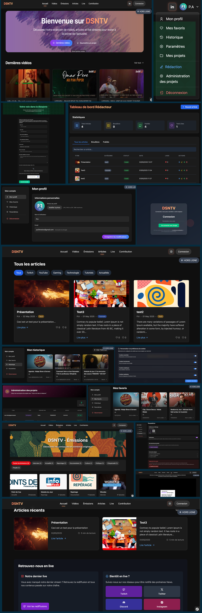

<!DOCTYPE html>
<html lang="en">
  <head>
    <meta charset="UTF-8" />
    <meta name="viewport" content="width=device-width, initial-scale=1.0" />
    <title>Projet de stage DSNTV</title>
    <link rel="stylesheet" href="css/styles.css" />
  </head>
  <body></body>
</html>


  
</section> 
<section class="project-glass">
  <div class="glass-card project-details">
    <h2 class="gradient-title">Le projet en bref</h2>
    <ul class="info-list">
      <li>
        <strong class="text-highlight">Client :</strong> DSNTV (branche média de
        Baifall Dream)
      </li>
      <li>
        <strong class="text-highlight">Objectif :</strong> Plateforme média
        communautaire (vidéos, lives, articles)
      </li>
      <li>
        <strong class="text-highlight">Durée :</strong> Stage de 2 mois, en
        binôme
      </li>
    </ul>

    <h3 class="section-subtitle">Ce que j’ai réalisé</h3>
    <ul class="bullet-list">
      <li>Développement complet avec Symfony (MVC, routing, controller)</li>
      <li>Authentification via Google OAuth2</li>
      <li>
        Conception des pages accueil, émission, RGPD, compte, connexion et
        certains componants
      </li>
      <li>Création de modules utilisateur : favoris, historique, formulaire</li>
      <li>Affichage dynamique avec Twig + Webpack Encore</li>
      <li>Sécurisation avec CSRF, reCAPTCHA, headers de sécurité</li>
      <li>Maquettage, design responsive avec Tailwind</li>
    </ul>

    <h3 class="section-subtitle">Compétences acquises</h3>
    <ul class="bullet-list">
      <li>Architecture Symfony & bonnes pratiques MVC</li>
      <li>Manipulation d’API externes (OAuth2, reCAPTCHA)</li>
      <li>Structuration propre avec Git, branches & versioning</li>
      <li>Gestion de projet (Trello, brainstorming, autonomie)</li>
    </ul>

    <blockquote class="project-quote">
      “Un travail sérieux et complet, Paul a mené ce projet avec autonomie et
      rigueur.”
    </blockquote>
    <p class="project-note">
      Le projet n’est pas encore en ligne, l’entreprise poursuivant encore son
      développement. Une partie du code est néanmoins
      <a href="https://github.com/ton-compte/nom-du-repo" target="_blank"
        >disponible sur GitHub</a
      >.
    </p>
  </div>
</section>

<section class="project-screens">
  <h2 class="gradient-title">Quelques extraits</h2>
  <a href="images/bento_dsntv.png" target="_blank">
    
  </a>
</section>
